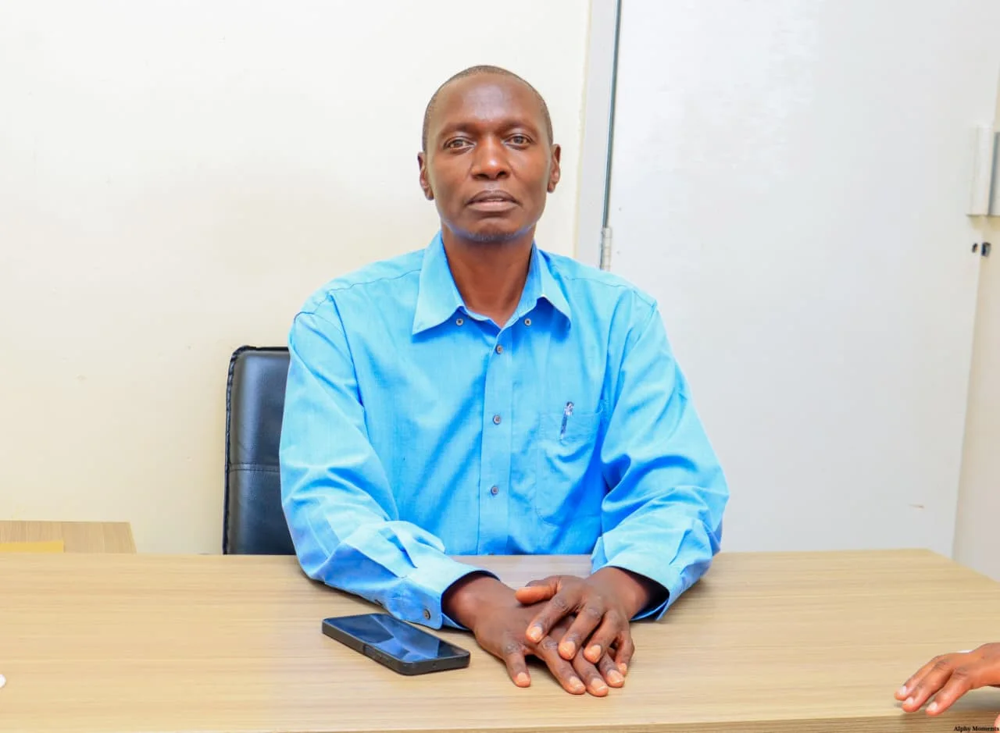
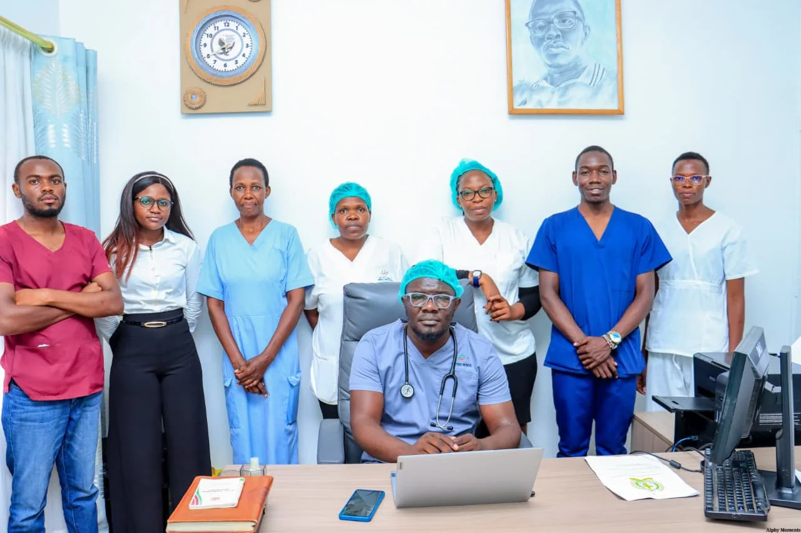
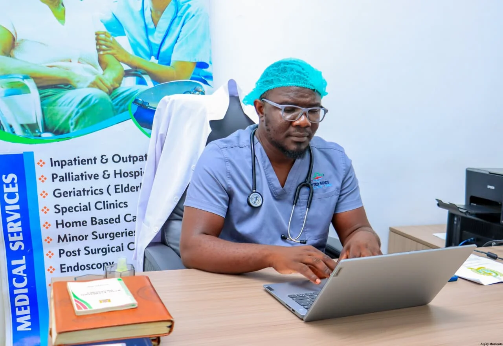
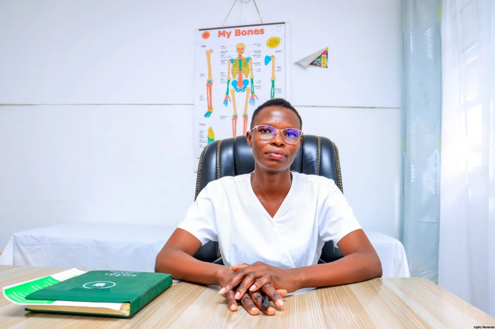
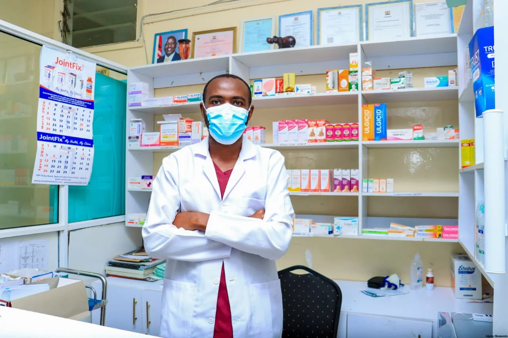
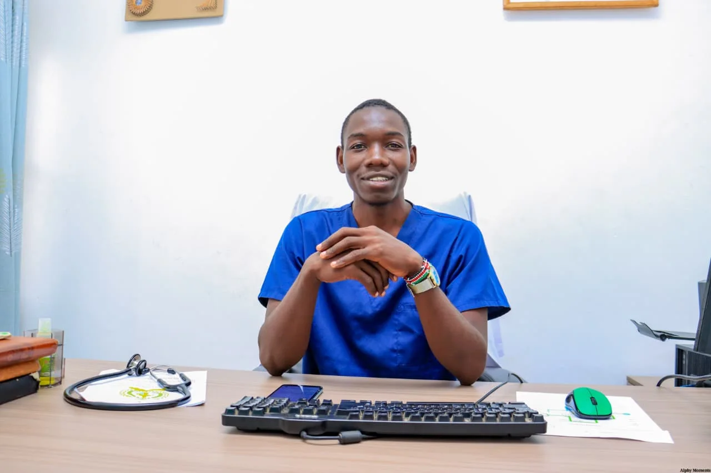
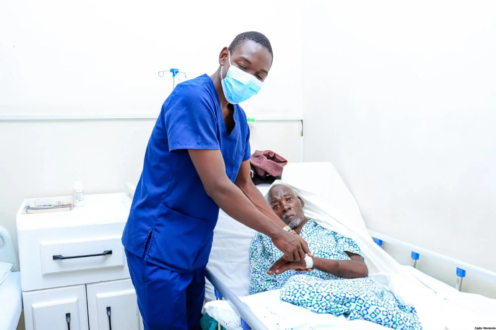

General Surgeon
Prof. Dr. Francis Ouko Odira
Public medical directories list him as a surgeon in Kisumu; AfriDoctor classifies his profile under General Surgeon.
Our people
Staff at the centre include clinical, nursing, administration and allied health roles.

Gifted Minds Medical Centre teamStaff at Gifted Minds
The centre identifies the staff members pictured and their roles.

Public medical directories list him as a surgeon in Kisumu; AfriDoctor classifies his profile under General Surgeon.

Dr. Fred Onyino is the Doctor-in-Charge and Director of Gifted Minds Medical Centre.




A multidisciplinary team

Physician consultants
Medical officers
Clinical officers
Registered nurses
Pharmacist
Laboratory technologist
Physiotherapist
Nutritionist
Facility administrator
Accounts officer
Human Resource & Information Officer
Hospital Management System ICT officer